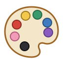
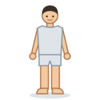

Unit 12
顏色同衫Colours & Clothes
紅色, 藍色 and the rest, 帽 外套 裙 眼鏡, 著 or 戴, and a colour before a thing with 嘅: 紅色嘅衫.

LearnColours and clothes
Eleven colours, clothes and their measure words, 著 and 戴, and 紅色嘅衫.

GameDress Up
Hear an outfit and dress the figure in it: 紅色嘅衫, 藍色嘅褲, 黑色嘅帽.
GameTone Detective
Hear a colour or a garment and pick its tones. 紅 or 粉?
SpeakingSay It Back
Record yourself and compare your tones with a native speaker's pitch curve.